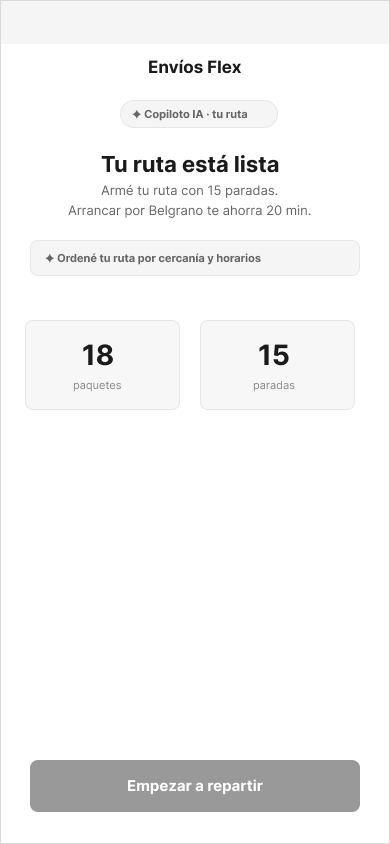
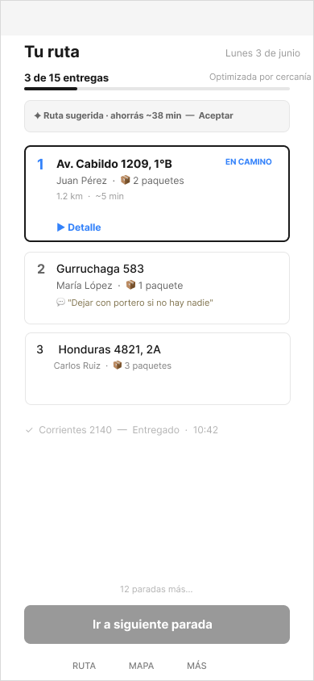
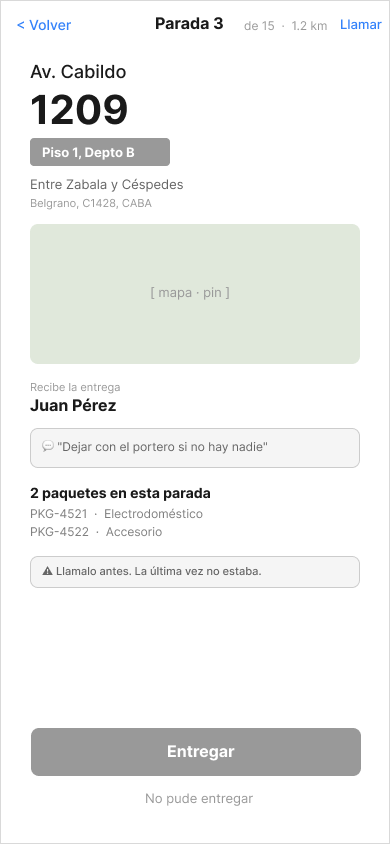
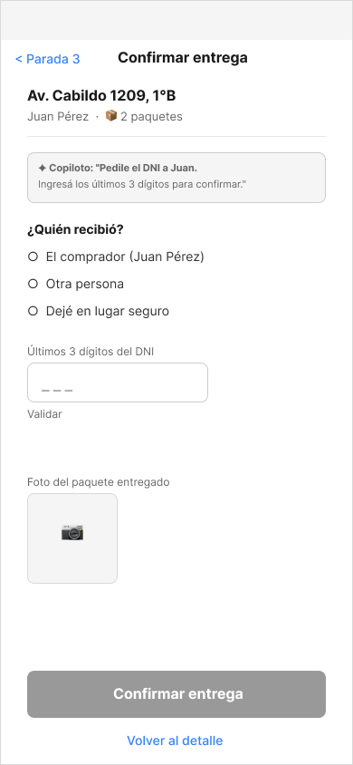
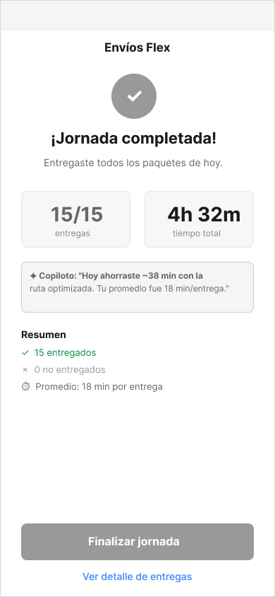
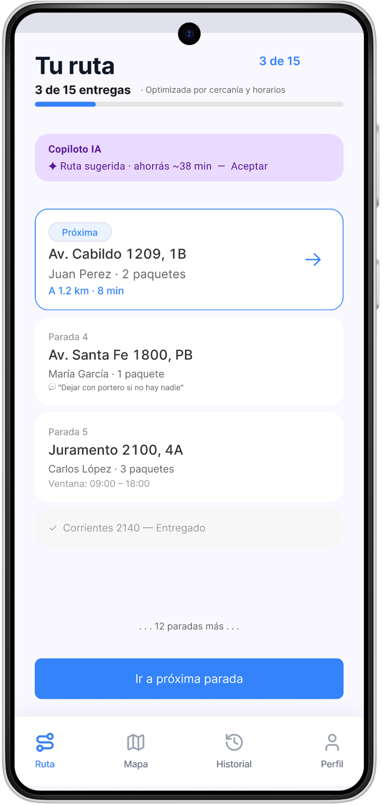
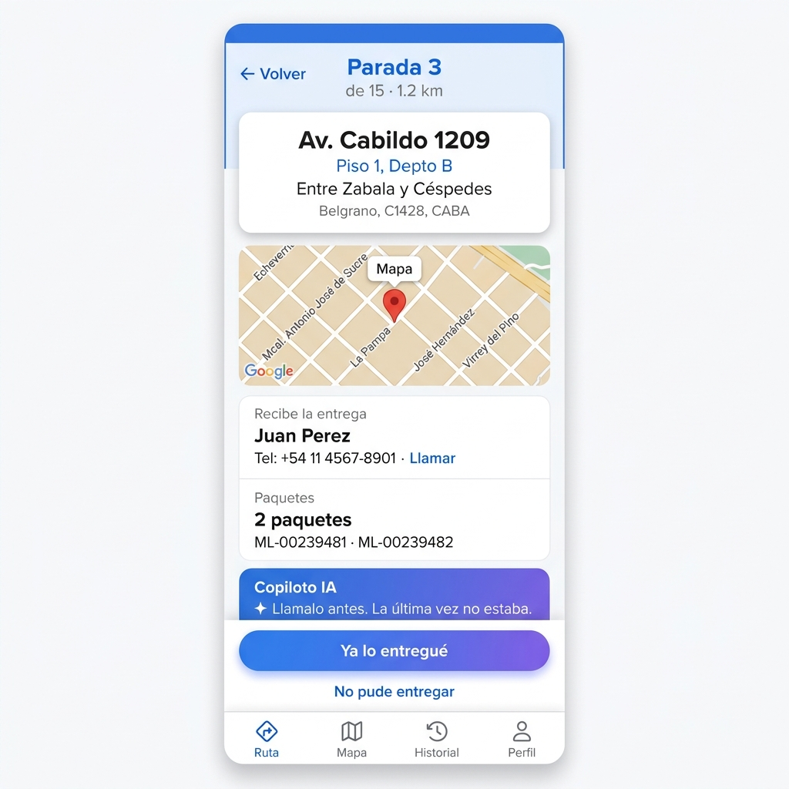

Del concepto a las pantallas
User flow, wireframes y prototipo en alta definición — todo lo que necesitás para entender cómo funciona la propuesta.
El flujo completo
El sistema se articula como un HUB + paradas. La pantalla P1 (Vista de ruta) es el centro de operaciones: el transportista siempre vuelve ahí después de cada acción. Esto simplifica la navegación y da sensación de control.

Wireframes — Exploración en baja definición
Antes de definir el look visual, se exploró la estructura y jerarquía de información de cada pantalla. Estos wireframes validaron las decisiones de arquitectura antes de invertir en detalle.





Pantallas en alta definición Supuesto
Las pantallas clave diseñadas en el sistema visual de Mercado Libre. Resuelven los pain points identificados en la investigación y demuestran el thinking de flujo completo.


Diseño para la fricción — cuando el happy path falla
Un diseño que solo funciona en condiciones ideales no sirve para transportistas en la calle. Estos son los escenarios reales que la propuesta contempla.